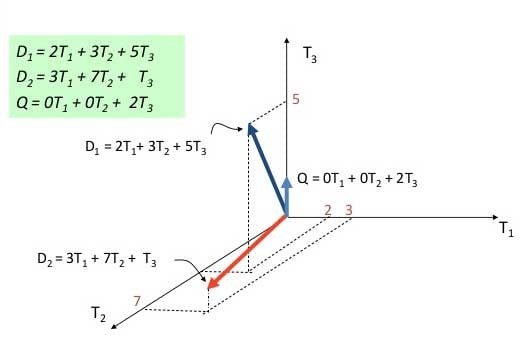
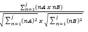
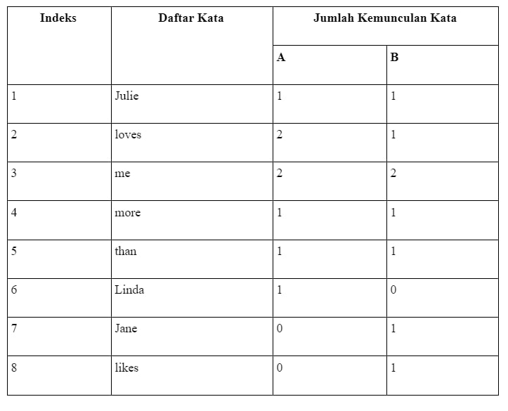
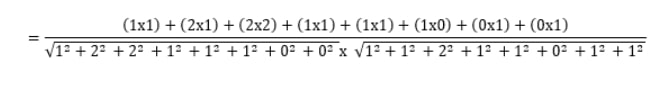

Information retrieval atau Sistem temu balik adalah menemukan (biasanya dokumen) dari sebuah ketidakstrukturan yang alami (biasanya teks) untuk memenuhi sebuah kebutuhan informasi dari koleksi yang berukuran besar (biasanya disimpan pada komputer). Sistem information retrieval atau sistem temu balik informasi bertujuan untuk mencukupi kebutuhan informasi pengguna dengan sumber informasi yang tersedia sesuai dengan situasi. Penulis mempresentasikan ide dan pikiran mereka ke dalam sebuah dokumen, pencari dokumen mencari sebuah dokumen di dalam sekumpulan dokumen dimana pencari tersebut tidak mengetahui dengan pasti bagaimana cara menemukan dan mengenali dokumen yang tepat sesuai dengan kebutuhannya, sistem temu balik informasi mempertemukan ide yang ditulis penulis tersebut dengan kebutuhan informasi yang dibutuhkan oleh pencari dokumen tersebut yang dinyatakan kedalam pernyataan (query).
Kemiripan kalimat memainkan peran penting pada berbagai penelitian yang berhubungan dengan teks dan aplikasi. Vector Space Model (VSM) digunakan sebagai representasi dari kumpulan dataset dokumen teks.Dokumen dalam Vector Space Model (VSM) berupa matriks yang berisi bobot seluruh kata pada tiap dokumen Bobot tersebut menyatakan kepentingan atau kontribusi kata terhadap suatu dokumen dan kumpulan dokumen. Kepentingan suatu kata dalam dokumen dapat dilihat dari frekuensi kemunculannya terhadap dokumen.
Gambar diatas menunjukkan pemodelan dokumen teks di ruang dimensi dimana (D) adalah kalimat dokumen sedangkan (T) adalah term atau kata.Untuk mendapatkan nilai jarak atau kemiripan dokumen, dapat menggunakan berbagai macam varian rumus perhitungan jarak diantaranya adalah (1) Cosine, (2) Jaccard, (3) Dice, (3) Euclidean, (4) Manhattan, (5) Minkowski, (6) Mahalanobis, (8) Weighted. Dalam tugas ini kami akan mengunakan metode Cosine.
Cosine Similarity dapat diimplementasikan untuk menghitung nilai kemiripan antar kalimat dan menjadi salah satu teknik untuk mengukur kemiripan teks yang popular. Contoh penggunaan Cosine Similarity dalam menguji kemiripan dua buah kalimat adalah sebagai berikut:
Misalkan diberikan dua buah kalimat yaitu kalimat A dan B, yaitu:
A : Julie loves me more than Linda loves me
B : Jane likes me more than Julie loves me
Uji kemiripan teks dapat dilakukan dengan rumus:
Dengan: j = |A ∩ B| Kemiripan =
nB = jumlah kemunculan kata indeks ke-n dari daftar kata pada kalimat B.
nB = jumlah kemunculan kata indeks ke-n dari daftar kata pada kalimat B.
Berdasarkan rumus tersebut di atas dilakukan penghitungan seperti di bawah ini. Dengan Tingkat kemiripan teks =
= 0.821584